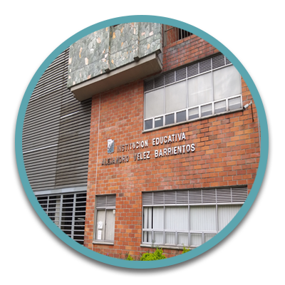

campus life

Library
I go to the Librery once a week
A library is a collection of materials, books or media that are easily accessible for use and not just for display purposes. It is responsible for housing updated information in order to meet the user's needs on a daily basis. A Library provides physical (hard copies documents) or digital access (soft copies) materials, and may be a physical location or a virtual space, or both. A library's collection can include printed materials and other physical resources in many formats such as DVDs, CDs and Cassette as well as access to information, music or other content held on bibliographic databases.
Library
I go to the laboratory twice a week
A laboratory (UK: /ləˈbɒrətəri/, US: /ˈlæbərətɔːri/; colloquially lab) is a facility that provides controlled conditions in which scientific or technological research, experiments, and measurement may be performed. Laboratory services are provided in a variety of settings: physicians' offices, clinics, hospitals, and regional and national referral centers
Laboratory
I go to the colosseum five days a week
The Colosseum is an amphitheatre built in Rome under the Flavian emperors of the Roman Empire. It is also called the Flavian Amphitheatre. It is an elliptical structure made of stone, concrete, and tuff, and it stands four stories tall at its highest point. It measures 620 by 513 feet (189 by 156 metres) and could hold as many as 50,000 spectators. The Colosseum was famously used for gladiatorial combat.
youth and sports day celebration
It is a day when young people can enjoy outdoor activities such as games, sports, yincanas. Activities aimed at young people are carried out such as concerts, games, sports, etc. youth is one of the pillars on which today's society is sustained. It is the future of a tomorrow that will be the ones who take the reins of society. It is very important that all young people today have the opportunity to study and work in what they like.
Inter school competition
At the school, we organized interschool sports moved from Friday afternoons to Saturdays. New clubs organized during Tech’s third decade include the floriculture club, projection club, an interschool hockey league, cheerleaders and, as part of the Girls Athletic Association, ballet swimming.
Mission and Vision
-
mission and vision
Mission: We are an educational institution recognized for its training, academic and behavioral demands, which offers training to the community and pedagogical support from the humanization of education, forming upright human beings that are reflected in the good school environment and the results of external tests.
Vision: We will be recognized at the local and departmental level for being an Institution that generates investigative processes through the pedagogical use of ICT, plans cultural and sports spaces as part of the comprehensive training of families, sensitizes its students about environmental training and reading comprehension in their mother tongue and in a foreign language, as a transversal axis of academic training, with competent administrative, managerial and teaching staff to provide the service. -
Institutional philosophy
Education is a process of permanent training, which seeks to improve the living conditions of the human being. For this reason, the Alejandro Vélez Barrientos Educational Institution intends that its students value life as a fundamental right, develop respect for individual differences and use dialogue as a civilized instrument in conflict resolution. The axiological principles that base the educational and pedagogical process in the establishment, at all times of the educational and pedagogical process, take into account four aspects as learning emphasis: psychological, cognitive, axiological and linguistic. The axiological aspect that is constituted in principle, seeks to promote the valuation of people for what they are, for what they do and not for what they have (social and not material affection); acceptance of himself, as a member of the group with specific characteristics; feelings towards oneself and others, such as love, companionship, fraternity, solidarity and equality, without any discrimination; participation in family and community work, and exchange and communication with youth and adults in a democratic community. Relationships that favor the common welfare are also fostered.